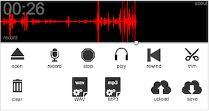

Client-side audio capture and conversion to MP3.
This recorder captures user audio, converts to MP3 format on the client side, then uploads to the server.
A single-domain license costs $74.99. To purchase a license, go to the online store.
Den Hoopingarner
dhoopingarner@gmail.com
Source code is available under a separate license.
Do you need something more visual? Try the Visual Recorder, available now for only $49.99.
Think "Audacity in a web page."